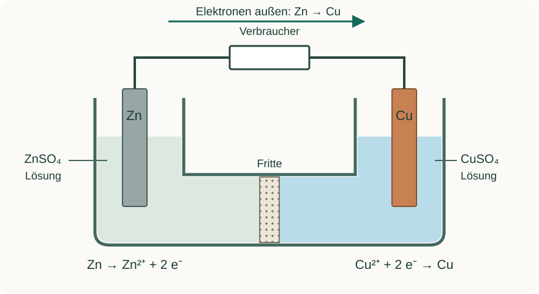
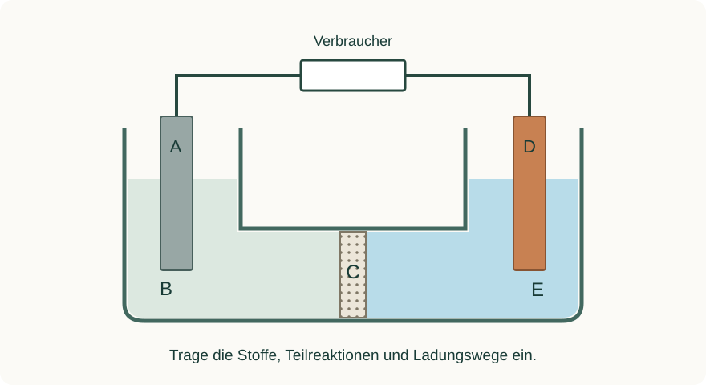

Informieren
Erklärung und Beispiel öffnen
Im Tauchversuch überträgt Zink Elektronen unmittelbar an Kupfer(II)-Ionen an der Metalloberfläche. Für eine nutzbare Spannungsquelle werden die beiden Teilreaktionen räumlich getrennt: Ein Zinkblech taucht in ZnSO₄-Lösung, ein Kupferblech in CuSO₄-Lösung. Diese Kombination heißt Daniell-Element.
Ein äußerer metallischer Leiter verbindet die Elektroden über einen Verbraucher. Die Lösungen brauchen zusätzlich einen ionenleitenden Weg. Im U-Rohr ermöglicht der Elektrolyt in den Poren der Fritte diesen Weg und verringert die rasche Vermischung der Lösungen. Ein Doppel-U-Rohr mit zwei Fritten und ZnSO₄-Lösung im Mittelraum erfüllt dieselbe Grundfunktion; die Flüssigkeitsgrenzflächen sind dabei keine idealen Trennungen.

An der Zinkoberfläche werden Zn-Atome zu Zn²⁺ oxidiert. Die Elektronen gelangen außen zur Kupferelektrode, wo Cu²⁺ zu Cu reduziert wird. Die Kupferelektrode stellt die leitende Oberfläche für die Abscheidung bereit. Die Summe ist dieselbe Reaktion wie im Tauchversuch:
Zn(s) + Cu²⁺(aq) → Zn²⁺(aq) + Cu(s)
Die Zellschreibweise fasst den Aufbau zusammen:
Zn(s) | Zn²⁺(aq) || Cu²⁺(aq) | Cu(s)
Hier steht links die Oxidations-, rechts die Reduktionshalbzelle. Ein einfacher Strich bezeichnet die Phasengrenze Metall/Lösung. Der Doppelstrich steht in unserer Schulschreibweise vereinfacht für die ionenleitende Verbindung; er behauptet keine ideale Salzbrücke ohne Diffusionseinflüsse. Konzentrationen können hinter den Ionen ergänzt werden.
A · Die Daniell-Zelle vervollständigen
Das Schema zeigt eine entladende Daniell-Zelle. Zur Auswahl stehen: Zink, Kupfer, Zinksulfat-Lösung, Kupfer(II)-sulfat-Lösung und Fritte. Links wird Zink zu Zn²⁺ umgesetzt. Übertrage die Skizze auf Papier und bearbeite die Aufgaben.

- Ordne A bis E zu. Trage an den beiden Elektroden die Teilgleichungen ein.
- Zeichne den Elektronenweg im äußeren Leiter ein. Beschreibe in einem Satz den Ladungstransport durch C.
- Entwickle aus der Skizze die Zellschreibweise. Beide Metallionen-Lösungen haben c = 0,10 mol/L.
Hilfe 1
Jede Elektrode gehört zu ihrer eigenen Metallionen-Lösung. Die linke Teilgleichung liefert die Elektronen für die rechte.
Hilfe 2
A gehört zum Redoxpaar Zn²⁺/Zn; D zum Paar Cu²⁺/Cu. C ermöglicht Ionenbewegung in benetzten Poren. Die zwei Elektronen der Zinkoxidation werden bei der Kupferreduktion aufgenommen.
Musterlösung
A: Zink. B: Zinksulfat-Lösung. C: Fritte. D: Kupfer. E: Kupfer(II)-sulfat-Lösung.
Links: Zn → Zn²⁺ + 2 e⁻
Rechts: Cu²⁺ + 2 e⁻ → Cu
Der Elektronenpfeil führt außen von A über den Verbraucher zu D. In C tragen gelöste Ionen in den Poren zum Strom bei; Elektronen wandern nicht durch den Elektrolyten zur Gegenelektrode.
Zn | Zn²⁺(0,10 mol/L) || Cu²⁺(0,10 mol/L) | Cu
Der Aufbau trennt die Reaktionen, verbindet aber sowohl den Elektronenweg als auch den Ionenweg. Nur die beiden Elektroden miteinander zu verbinden wäre für eine anhaltende Entladung unvollständig.
B · Vom Tauchversuch zur Spannungsquelle
Drei Papierentwürfe sollen die Reaktion von Zn mit Cu²⁺ als äußeren Strom nutzbar machen:
| Entwurf | Beschreibung |
|---|---|
| I | Zink liegt unmittelbar in Kupfersulfat-Lösung; ein Draht ist nur an Zink angeschlossen. |
| II | Zn/Zn²⁺ und Cu²⁺/Cu sind getrennt; beide Metalle sind über einen Widerstand verbunden. Zwischen den Lösungen fehlt jede leitende Verbindung. |
| III | Wie II, aber mit benetzter Fritte als ionenleitender Verbindung. |
- Beurteile jeden Entwurf in Bezug auf eine anhaltende Stromabgabe durch den Widerstand.
- Sage für III bei Entladung die Massenänderung beider Elektroden voraus. Begründe mit Teilgleichungen.
- Erkläre, weshalb eine reale Fritte die unerwünschte direkte Reaktion nicht für unbegrenzte Zeit vollständig ausschließt.
Hilfe 1
Prüfe für jeden Entwurf getrennt: Wo findet Elektronenübertragung statt? Ist der äußere Weg vollständig? Kann die Lösung die durch Elektrodenreaktionen veränderte Ionenbilanz ausgleichen?
Hilfe 2
In I wird Kupfer direkt auf Zink abgeschieden. In II können kleine Ladungsverschiebungen auftreten, aber ohne Ionenweg bleibt keine dauerhafte Entladung. In III können Ionen durch die Poren transportiert werden – auch Stoffdiffusion ist möglich.
Musterlösung
I: Die Redoxreaktion kann direkt auf der Zinkoberfläche stattfinden. Ein einseitig angeschlossener Draht leitet keinen anhaltenden Strom durch einen äußeren Verbraucher. II: Der Ionenweg fehlt. Kleine anfängliche Ladungsverschiebungen wirken weiterer Nettoreaktion entgegen; eine anhaltende Stromabgabe ist nicht möglich. Eine vorübergehende hochohmige Spannungsanzeige würde diesen Einwand nicht widerlegen. III: Beide Leitungswege sind geschlossen; die Zelle kann durch die gekoppelte Redoxreaktion einen Strom liefern.
Bei III nimmt die Zinkmasse durch Zn → Zn²⁺ + 2 e⁻ ab. An Kupfer nimmt die Masse durch Cu²⁺ + 2 e⁻ → Cu zu. Die Änderungen können bei kurzen Zeiten und kleinen Strömen zu klein sein, um sichtbar zu werden.
Eine Fritte ist porös und nicht ionenselektiv. Durch Diffusion können Cu²⁺-Ionen langfristig zur Zinkseite gelangen und dort direkt reduziert werden. Eine Fritte verringert rasche Vermischung; sie hält die Lösungen nicht dauerhaft stofflich vollkommen getrennt.
Zurück zur Checkliste
Kannst du den Punkt jetzt an einer eigenen Erklärung oder einer neuen Aufgabe nachweisen? Ordne dich ein: sicher (selbstständig), teils (mit Hilfe) oder offen (noch Lernbedarf). Notiere bei Bedarf, was du noch klären möchtest.
Fachliche Quellen und Modellgrenzen
Eigene Lerntexte, Aufgaben, modellhafte Daten und Abbildungen. Fachliche Grundlagen:
Die Beispiele verwenden vereinfachte Metall/Metallionen-Systeme. Reale Beobachtungen hängen auch von Konzentration, Oberfläche, Zeit und Nebenreaktionen ab.